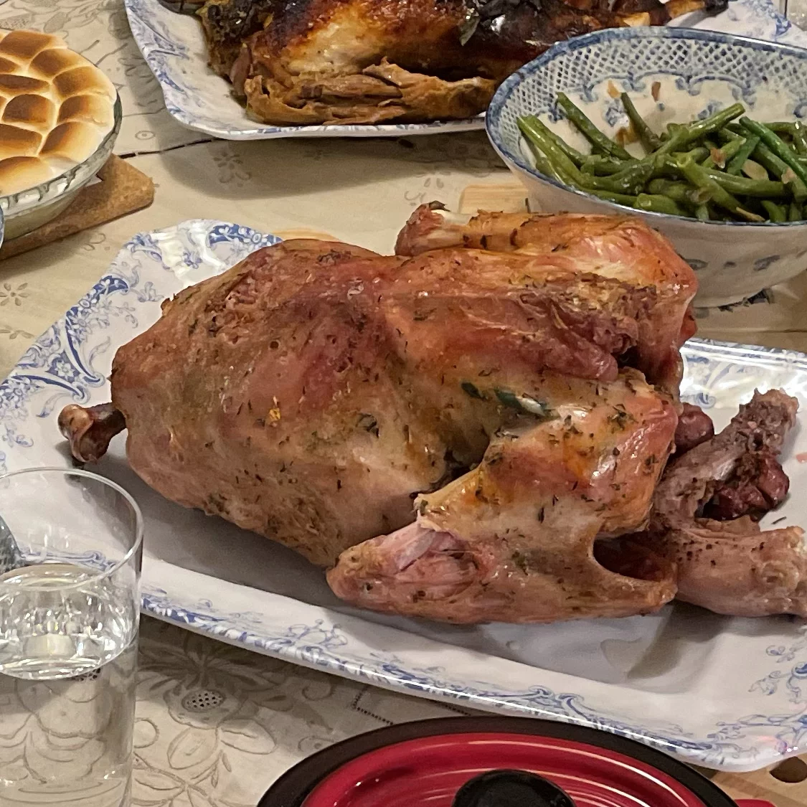

HOME
Turkey

This method works with turkeys weighing 12 to 20 pounds.
Increase cooking time to reach safe internal temperature, approximately 30 minutes per pound.
Check the water pan every 2 to 4 hours and add hot water as needed. Add damp wood chips as needed to maintain cooking temperature at 250 degrees F (120 degrees C).
A gas smoker is used in this recipe. Pecan is the primary wood, but you can use charcoal.
This recipe takes about 7 hours 55 mins from preparation to cook and serving.
Ingredients
The ingredients yields 12 servings.
- (12 pound) whole turkey, thawed if frozen, neck and giblets removed
- ¾ cup kosher salt
- ¾ cup unsalted butter, melted
- 1 medium red bell pepper, diced
- 2 cups sliced mushrooms
Directions
-
Place turkey in a roasting pan. Rub salt all over and inside turkey. Let sit for 1 hour.
-
Preheat smoker to 250 degrees F (120 degrees C). If your smoker is equipped with a water pan, fill it.
-
Rinse salt off turkey and pat dry with paper towels. Return to roasting pan and baste with melted better. Cover with aluminum foil and place in smoker.
-
Cook for about 3 hours; remove aluminum foil. Continue to cook, uncovered, until an instant-read thermometer inserted into the thickest part of the turkey thigh reads 165 degrees F (74 degrees C), 3 to 3 1/2 hours.
-
Remove turkey from the smoker and tent with aluminum foil. Let it rest in a warm area before slicing, 45 to 60 minutes.
Nutrition Facts
Per Serving: 773 calories; protein 90.7g; fat 42.9g; cholesterol 295mg; sodium 5914mg.